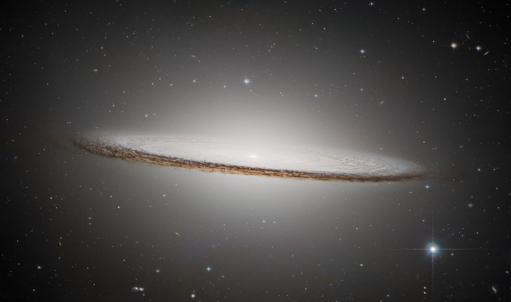

Entdecke das Universum
Das Universum ist riesig und voller faszinierender Dinge. Auf AstraWiki erfährst du mehr über die Planeten unseres Sonnensystems, schwarze Löcher und die Geschichte der Raumfahrt. Dabei geht es um wichtige Fakten, spannende Entdeckungen und besondere Orte im Weltall.

Quelle:https://science.nasa.gov/asset/hubble/sombrero-galaxy-2/
Sonnensystem
Entdecke die Sonne, die acht Planeten und weitere Himmelskörper unseres Sonnensystems
Mehr erfahrenSchwarze Löscher
Erfahre mehr über diese geheimnisvollen Dinge
Mehr erfahrenRaumfahrt
Von Spuntik bis zur modernen Raumfahrt
Mehr erfahrenMedien
Erlebe das Weltall mit spannenden Videos und Audioaufnahmen
Mehr erfahrenWas dich auf dieser Webseite erwartet:
- Informationen über die acht Planeten des Sonnensystems
- Fakten über schwarze Löcher
- Die Geschichte der Raumfahrt
- Bilder, Videos und Audio über das Weltall
Noch mehr über das Universum entdecken?
Du möchtest noch mehr über das Universum erfahren? Besuche die Website der NASA!
Zur NASA-Webseite